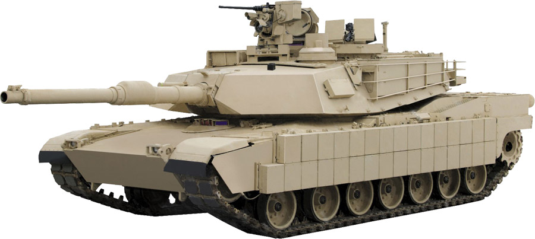

ようこそ
このサイトでは世界各国で運用されている代表的な主力戦車を紹介しています。 「前へ」「次へ」「ランダム」ボタンを押して様々な戦車を見ることができます。
M1 Abrams

アメリカ軍の主力戦車です。
今日のおすすめ戦車
Leopard 2
主要戦車比較表
| 戦車 | 国 | 重量 | 最高速度 |
|---|---|---|---|
| M1 Abrams | アメリカ | 66.8t | 67km/h |
| Leopard 2 | ドイツ | 64t | 68km/h |
| 90式戦車 | 日本 | 50.2t | 70km/h |
| 10式戦車 | 日本 | 48t | 70km/h |
| T-90M | ロシア | 48t | 60km/h |
| Challenger 2 | イギリス | 62.5t | 59km/h |
| K2 Black Panther | 韓国 | 55t | 70km/h |
| Leclerc | フランス | 57.4t | 72km/h |
このサイトについて
このWebサイトはHTML・CSS・JavaScriptを使用して作成しました。 JavaScriptでは配列・関数・if文・Math.random()を利用し、 ボタン操作によって表示する戦車を切り替えています。